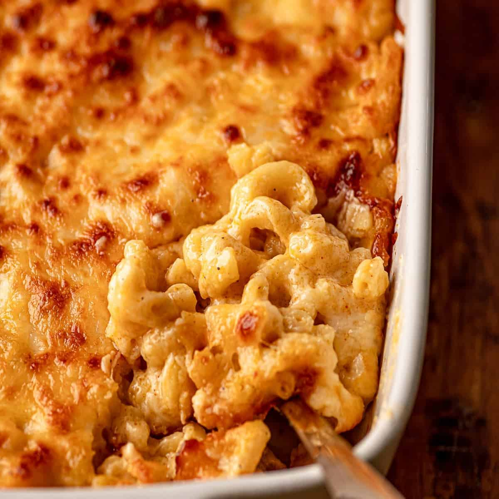

Japanese Fruit Sandwich Recipe

Not your average mac and cheese made by your late night baked boy, or by
yo' mama's average cooking skills. This Baked Mac and Cheese is STRAIGHT
BUSSING.
Ingredients
- 2 tablespoons butter
- ¼ cup finely chopped onion
- 2 tablespoons all-purpose flour
- 2 cups milk
- ¾ teaspoon salt
- ½ teaspoon dry mustard
- ¼ teaspoon ground black pepper
- 1 (8 ounce) package elbow macaroni
- 2 cups shredded sharp Cheddar cheese
- 1 (8 ounce) package processed American cheese, cut into strips
Steps
- Preheat the oven to 350 degrees F (175 degrees C).
- Melt butter in a medium saucepan over medium heat. Sauté onion for
2 minutes. Stir in flour and cook for 1 minute, stirring constantly
.
- Then stir in milk, salt, mustard, and pepper. Cook, stirring freque
ntly, until mixture boils and thickens.
- Meanwhile, bring a pot of lightly salted water to a boil. Add macar
oni and cook until al dente, 8 to 10 minutes; drain.
- Add Cheddar and American cheeses to milk mixture; stir until cheese
melts.
- Combine cheese sauce and macaroni in a 2-quart baking dish; mix wel
l.
- Bake in preheated oven until hot and bubbly, about 30 minutes. Let
cool 10 minutes before serving.